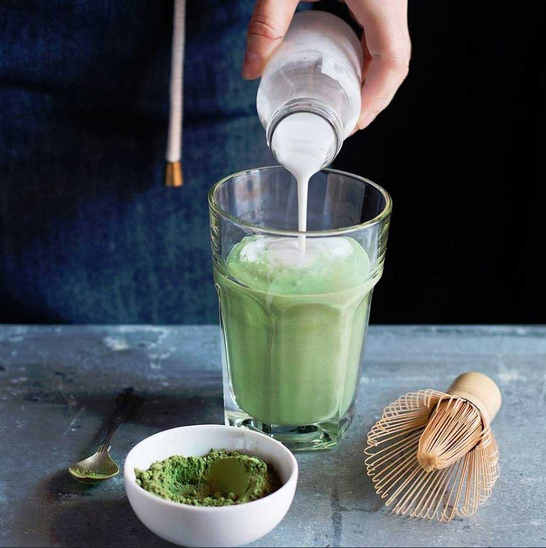

Home
Matcha Latte

Description
Make this easy Iced Matcha Latte just like your favorite coffee shop. Matcha is mixed together with cold milk, served over ice.
This Iced Matcha Latte recipe is a creamy and refreshing beverage. Matcha Lattes can be made hot and cold! If you’re missing your usual iced matcha latte from Starbucks or your neighborhood coffee shop, this recipe is for you! As a result, you’ll be able to make your favorite drink at home!
Ingredients
- 2 teaspoons matcha powder
- 1 to 2 tablespoons hot water
- 1 cup warm water
- Ice
- Milk of choice (I used almond milk)
Steps
- In a measuring cup or bowl, add the matcha powder. Pour in the 1 to 2 tablespoons of hot water and whisk until the matcha has fully incorporated into the water. This should create almost a bit of a paste.
- Pour in the remaining 1 cup of water and mix. Transfer to the fridge or freezer to chill for about 15 minutes.
- Fill two glasses full of ice and add your milk of choice so the glass is about 3/4 of the way full. If you like, this is a great time to add any simple syrup. Lastly, pour in the chilled matcha and stir.